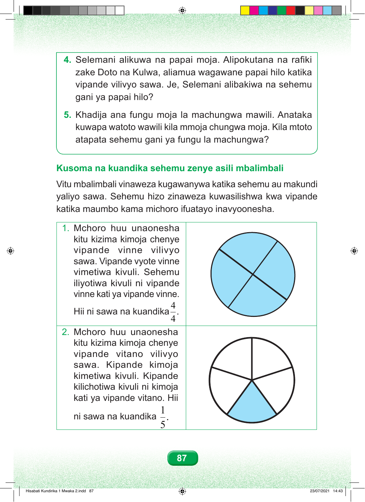

4. Selemani alikuwa na papai moja. Alipokutana na rafiki zake Doto na Kulwa, aliamua wagawane papai hilo katika vipande vilivyo sawa. Je, Selemani alibakiwa na sehemu gani ya papai hilo? 5. Khadija ana fungu moja la machungwa mawili. Anataka kuwapa watoto wawili kila mmoja chungwa moja. Kila mtoto atapata sehemu gani ya fungu la machungwa? Kusoma na kuandika sehemu zenye asili mbalimbali Vitu mbalimbali vinaweza kugawanywa katika sehemu au makundi yaliyo sawa. Sehemu hizo zinaweza kuwasilishwa kwa vipande katika maumbo kama michoro ifuatayo inavyoonesha. 1. Mchoro huu unaonesha kitu kizima kimoja chenye vipande vinne vilivyo sawa. Vipande vyote vinne vimetiwa kivuli. Sehemu iliyotiwa kivuli ni vipande vinne kati ya vipande vinne. 4 Hii ni sawa na kuandika . 4 2. Mchoro huu unaonesha kitu kizima kimoja chenye vipande vitano vilivyo sawa. Kipande kimoja kimetiwa kivuli. Kipande kilichotiwa kivuli ni kimoja kati ya vipande vitano. Hii 1 ni sawa na kuandika . 5 87 Hisabati Kundirika 1 Mwaka 2.indd 87 23/07/2021 14:43